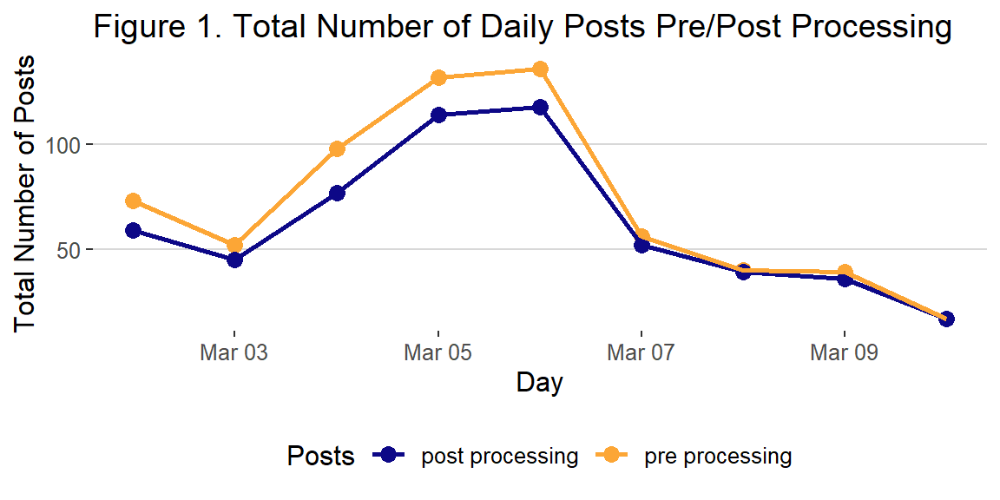
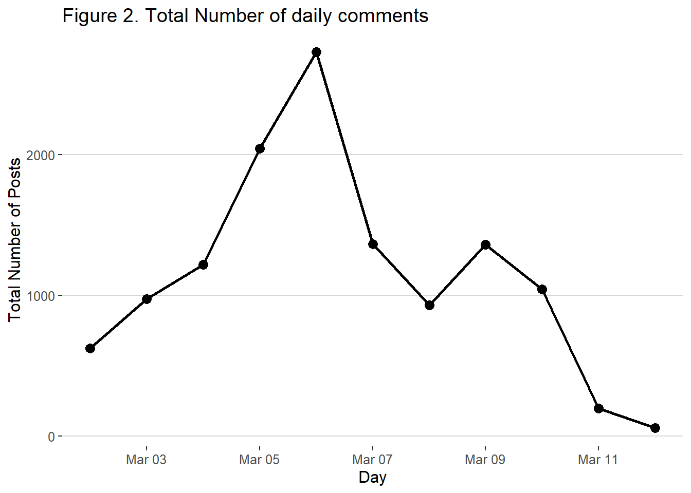
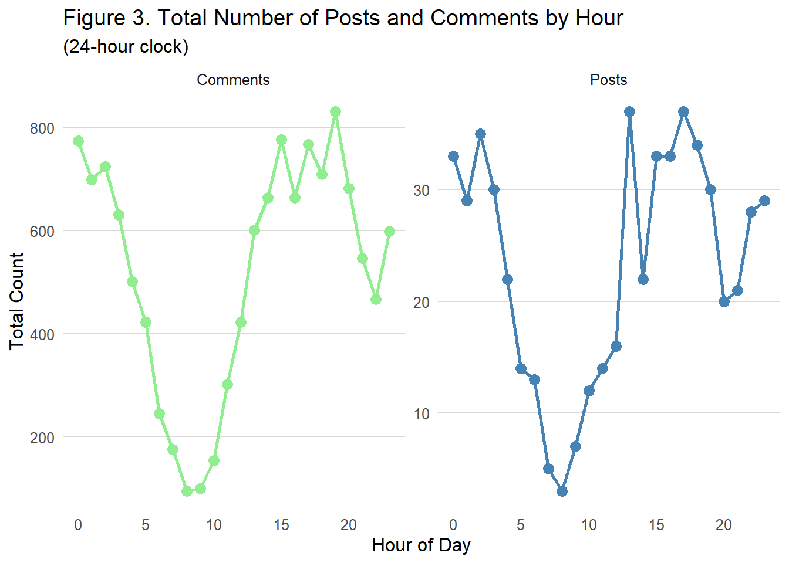
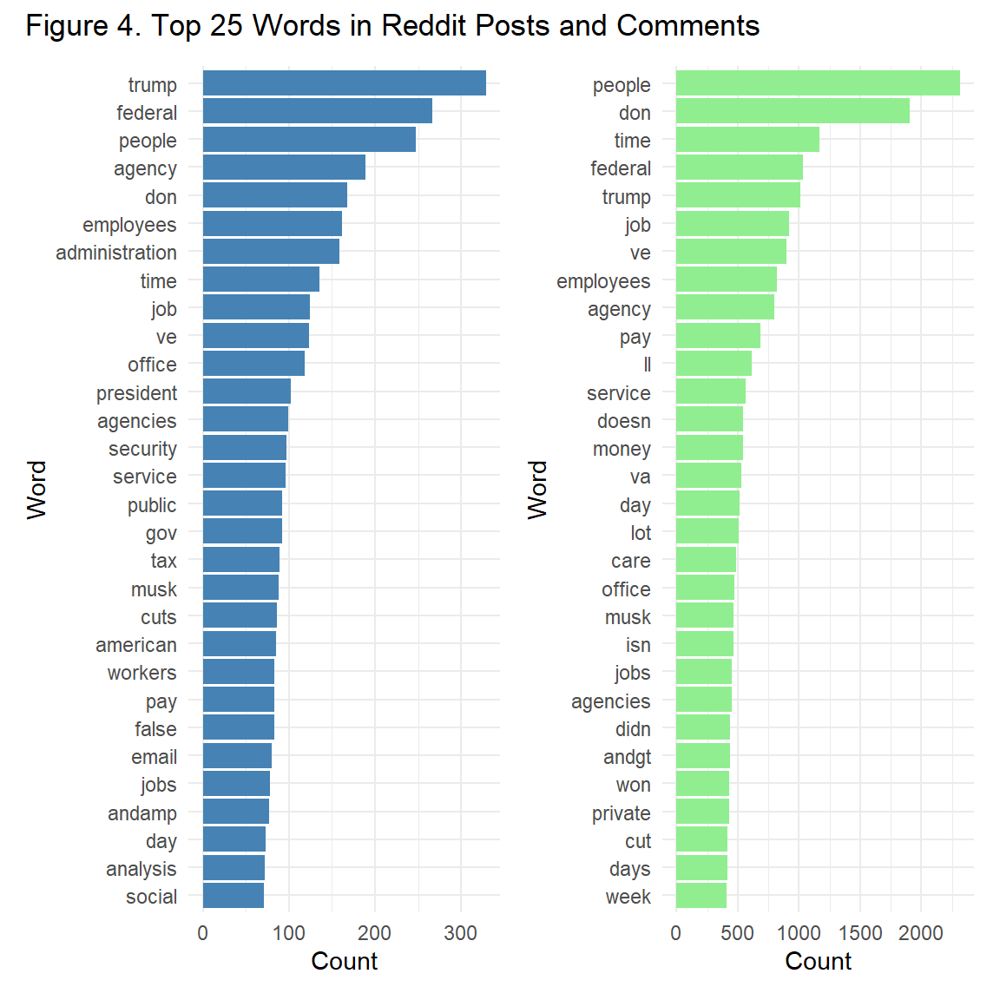

| search_term |
|---|
| DOGE |
| Department of Government Efficiency |
| wasteful spending |
| government waste |
| government fraud |
| reduction in force |
| rif |
| fork in the road |
DOGE Days on Reddit: Decoding Public Sentiment in a Federal Shakeup
Abstract
This study explores the impact of the Department of Government Efficiency (DOGE)’s federal workforce reductions, known as reduction in force (RIF), on public sentiment, utilizing Reddit as a data source. We scraped the Reddit API from March 2nd to March 10th resulting in 557 unique posts with 12,553 comments from subreddits related to DOGE’s approach to the RIF. Our exploratory analysis captures peaks in the number of posts/comments following major news event coverage related to the RIF, highlighting the utility of social media for understanding public perception of policy impacts. Our text analysis reveals a saliency on community with words such as people, employees, service, public, workers, and care being top words in both posts and comments. Moreover, a team of researchers coded a random subset of comments for public sentiment and found that only a quarter approved of DOGE’s actions towards the RIF.
Keywords
Reddit, Federal Government, DOGE
Introduction
Since its inception in January 2025, the Department of Government Efficiency (DOGE) has implemented significant reductions in the federal workforce, resulting in the separation of over 200,000 employees, in alignment with the new administration’s campaign promises. These reductions have generated widespread concern and anxiety among federal workers regarding their job security and mental well-being. Reports indicate that DOGE’s methods have raised questions about adherence to established internal policies. The ongoing debate surrounding DOGE’s impact on federal worker perceptions of job security necessitates a thorough examination. This study proposes that Reddit, as a platform for public discourse, provides researchers with valuable insights into real-time reactions and discussions among federal workers on this topic. Furthermore, this research aims to capture a range of public sentiments, including both critical and supportive perspectives, regarding DOGE’s workforce reduction efforts.
Methods
Search Terms. Our initial Reddit API scrape facilitated the development of a targeted keyword search strategy for this research. This iterative process resulted in the selection of eight keywords (see Table 1). We excluded keywords deemed vague or overly broad, such as ‘Elon Musk’ or ‘drain the swamp.’ Additionally, we observed that certain keywords yielded a high volume of irrelevant posts. For example, ‘policy changes’ returned numerous discussions unrelated to government workforce reductions. Similarly, ‘DOGE’ produced results related to DOGEcoin, which is outside the scope of this study. Therefore, we meticulously examined the subreddits identified in our initial scrape and selected those containing relevant discussions. To ensure a balanced representation of viewpoints, we included subreddits with conservative perspectives, such as ‘neoliberal’ and ‘AskConservatives,’ while avoiding subreddits focused on specific agencies like ‘NIH’ or ‘CDC,’ which could skew the data. In total, we selected 19 subreddits (see Appendix A) and utilized eight keywords, resulting in 152 unique keyword and subreddit combinations for our data collection.
Analytic Plan. We collected data from the Reddit API hourly, from March 2nd through the 10th, by scraping each combination of our eight keywords and 19 subreddits, resulting in 152 API requests per hour. Reddit API rate limits were managed by implementing a sleep timer between requests. Raw data from new Reddit posts were entered into a data table without initial processing. Following the data collection period, the raw dataset contained 643 posts. Each row in the data table represented a single post, and the columns included the post’s date and time, title, text, subreddit, comment count, URL, and the search term used for collection. Duplicate posts, which occurred when multiple keywords matched the same post, were removed. Post text was cleaned by removing weblinks and converting special characters, such as the at sign, to the word ‘at.’ The date column was converted to a date class variable, and the day of the week and time of day were extracted for analysis. After cleaning, the dataset consisted of 557 posts.
A preliminary review of the posts revealed that many were factual statements, questions, or reposted news articles and videos, which were not suitable for sentiment coding. Therefore, we also scraped the comments associated with each post. This resulted in 12,553 comments after processing, including information on score, up/down votes, and date/time. Comments containing only weblinks, videos, or images were removed. A review of the comments revealed more opinionated statements and reactions. We then randomly selected 400 comments (without replacement) and assigned them to four graduate students for coding, categorizing each comment as favoring, opposing, or neutral towards DOGE’s approach to federal workforce reductions.
Results
Post and Comment Trends
We show the number of posts pre/post processing by day in Figure 1 during the timeframe that we collected these data. There appears to be a noticeable peak in activity during the middle of the week. However, we do not have enough data across weeks to conclusively say it is due to the day of the week itself. It is more likely that these spikes are linked to specific events that occurred on those days, which sparked conversations. The two peaks in our graph could be attributed to two major news stories. On March 5th, Elon Musk made a statement about wanting to “save Western civilization from empathy,” and on March 6th, there were reports that President Trump was limiting Musk’s authority due to backlash over cuts to DOGE. These events likely had a significant impact on the volume of Reddit posts related to Elon Musk and DOGE, driving the observed spikes in activity.
On March 3rd, news outlets started reporting that DOGE was claiming $105 billion dollars in savings from cutting “wasteful” spending by layoffs and cutting foreign aid. This amount is controversial since since the receipts shown on their site only amount to less than $9.6 billion. This could have prompted Reddit users to take to subreddits and provide their opinion or thoughts on this matter.

We see a peak in the comments in Figure 2 on March 6th, which was a Thursday, and perhaps in anticipation of DOGE policies that often are released on Friday morning and have come to be known as “Musk-acre Friday.”

Word Frequency
Most posts occur during the early morning, noon, and afternoon hours (see Figure 3). The highest peak is around lunchtime, likely due to people posting during their lunch break. There is also significant activity in the afternoon, evening, and early morning. It is possible that people have more time in the evenings allowing them to be more likely to post on Reddit. The fewest posts are seen in the morning, which makes sense as people are typically getting ready for work, commuting, or sleeping in. The trend for comments (see Figure 3) mirrors that of posts. This makes sense because people are likely using Reddit at similar times for both posting and commenting. However, the volume of comments is much higher than the number of posts, as each post receives many comments from different users.

The graphs below (Figure 4) show the most frequent words used in both Reddit posts and their comment sections while excluding our keyword search terms. These words were identified by tokenizing the text and removing stop words, then counting the occurrences of the most common terms. The removal of stop words allowed us to focus on contextual words in the posts/comments rather than common words like “the” and “and” that are not useful in these types of analysis. Examining this visual reveals that in posts the current president’s name is the top word. However, in both posts and comments, there appears to be an emerging theme of community as words like people, employees, service, care, jobs, and public are also top words. This highlights the focus of the community on these key themes, reflecting the ongoing conversations and interests of Reddit users within this context.

Coding Comments
We randomly selected and coded 400 comments from the Reddit posts. Table 2 shows the distribution of favorability coding for these comments. Among the 400 comments, the majority (217) expressed opposition to DOGE’s approach to reducing the federal workforce, while 110 were supportive, and 73 remained neutral. A large number of comments (12,153) were not coded, as their content was not relevant for favorability assessment.
| outcome | Total |
|---|---|
| Not Coded | 12153 |
| favor | 110 |
| neutral | 73 |
| oppose | 217 |
Conclusion
In this study, we explored the impact of the DOGE’s actions towards the reduction in force impacting federal workers’ perceptions of job security, using Reddit as a platform to analyze public discourse. In examining Reddit posts and comments related to DOGE’s workforce reduction policies, we gained valuable insights into the sentiments of both federal workers and the broader public. Our findings indicate that these discussions are heavily influenced by political events and high-profile figures, such as President Trump and Elon Musk, with particular attention given to DOGE’s controversial cost-cutting measures. Through the analysis of both posts and comments, we captured a wide range of reactions, with the majority being strongly opposed to DOGE’s approach. The frequent mention of terms related to the administration underscores the community’s focus on government policies and the emotional responses these issues generate.
In terms of favorability, the distribution of comments revealed that 217 out of 400 were opposed to DOGE’s approach, 110 were supportive, and 73 were neutral. Additionally, patterns in post volume, especially peaks during significant news events, highlight the dynamic nature of these discussions, providing insights into the timing and public reactions to key policy decisions. While our study provides a snapshot of Reddit discussions during a specific period, the findings demonstrate the value of social media platforms like Reddit in capturing public sentiment on contemporary political and policy issues. However, it is important to note that Reddit may not fully represent the broader population’s views, as the platform tends to skew younger and more politically engaged, potentially limiting the generalizability of these findings.
The use of sentiment analysis on social media presents challenges, as it can be influenced by sarcasm, humor, or polarized language, which might affect the accuracy of sentiment classification. Therefore, our research team hand coded a subset of comments, yet inter-rater reliability was not estimated. The specific subreddits analyzed, while designed to capture diverse perspectives, may still over-represent certain political or ideological viewpoints. Moreover, the relatively short timeframe of this analysis—spanning only March 2nd to March 10th—means that we may not have captured long-term trends or shifts in sentiment as the DOGE policies unfold. Future research could address these limitations by expanding the data collection to other platforms or a longer timeframe and by incorporating demographic data to better understand the views of different Reddit user groups.
Appendix
We examined almost 100 subreddit posts while paying attention to the post topics and determined which ones were related to our topic. We also included right leaning subreddits to attempt to capture a balanced public sentiment on the topic. The following is our final list of subreddits that we scraped from.
| subreddit |
|---|
| 50501 |
| fednews |
| neoliberal |
| FedEmployees |
| WhatTrumpHasDone |
| Whistleblowers |
| economy |
| PoliticalOpinions |
| Trumpvirus |
| Virginia |
| Libertarian |
| AskTrumpSupporters |
| Askpolitics |
| Conservative |
| VeteransAffairs |
| economicCollapse |
| feddiscussion |
| maryland |
| govfire |